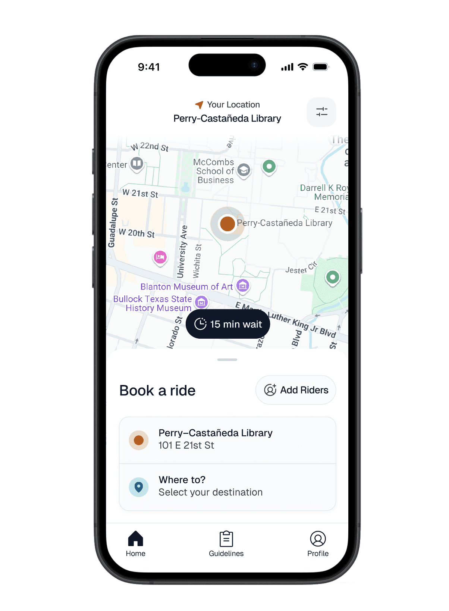
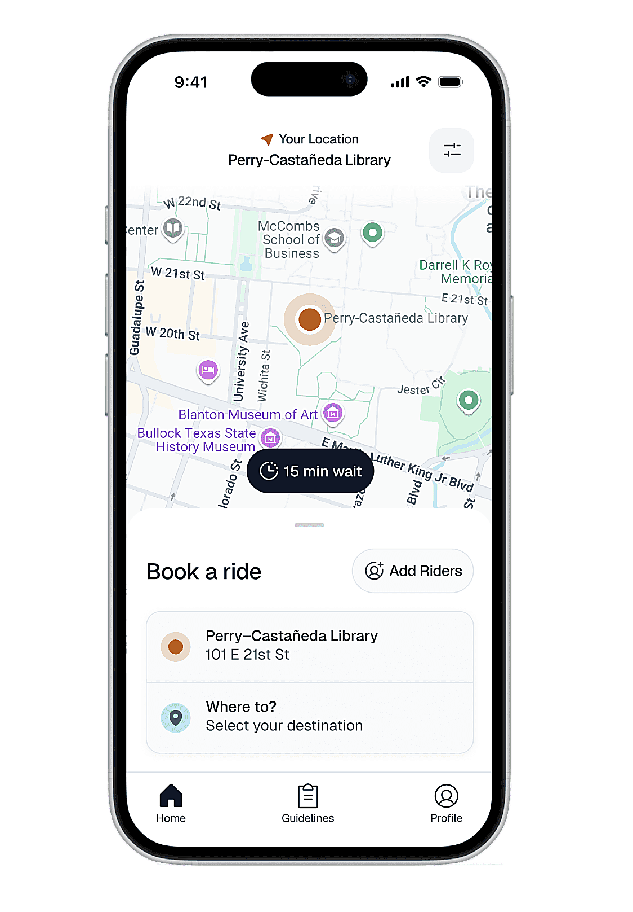
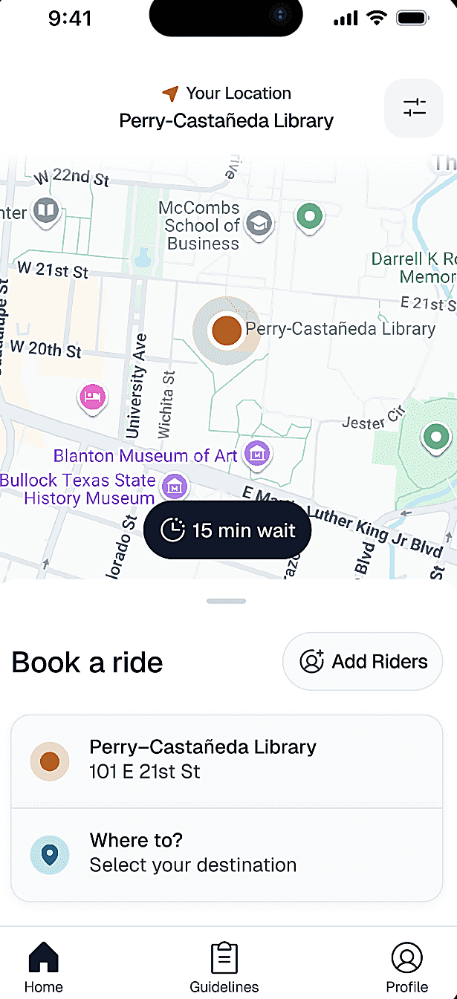

Sure Walk App
Sure Walk is a student-run safety service at the University of Texas at Austin that provides late-night rides to help students, faculty, and staff get home safely. Currently, the service is requested through a Google Form rather than a dedicated app. Our team explored how a mobile app could better support the Sure Walk experience by addressing usability, communication, and coordination challenges for both riders and employees.



Challenge
The Sure Walk experience involves multiple parties, from riders, drivers, navigators, and dispatchers, each with different goals and pain points. The challenge was to understand where friction occurred across these roles, particularly in areas such as awareness, communication, and task flow, and to prioritize features that would meaningfully improve safety, usability, and operational efficiency within a single app experience.
Results
We surveyed UT students and current or former Sure Walk staff to understand usage patterns, awareness, and pain points across roles. Using affinity diagramming, we synthesized insights and developed "How might we" questions to guide feature prioritization. These insights informed early sketches and low-fidelity wireframes, and the team is currently iterating on the first round of high-fidelity designs.
Process
Grounding Design in Rider and Staff Needs
By engaging UT students alongside current and former Sure Walk staff, including riders, drivers, navigators, dispatchers, and non-users, we identified early breakdowns in awareness and usability that were affecting how people accessed and coordinated the service. These insights surfaced consistent confusion around how requests were submitted and tracked, especially through the Google Form system. This directly shaped our decision to prioritize clarity in request flow and end-to-end visibility across roles, rather than focusing on isolated UI improvements.
Uncovering Systemic Issues Across the Service
Through affinity diagramming, we synthesized responses from all user groups and uncovered recurring breakdowns in communication, workflow coordination, and service transparency. This revealed a trust gap in the system's feedback loop, specifically around wait time transparency. It directly influenced our decision to prioritize real-time wait-time visibility and clearer status updates, ensuring riders could understand not just whether their request was received, but when they could actually expect pickup.
No idea when the driver will arrive.
My request got cancelled with no notification because I didn't show up within two minutes.
Turning Pain Points into Actionable Opportunities
We translated recurring pain points into a set of "How might we" questions that reframed issues into design opportunities. These guided prioritization across features, ensuring we focused on the most impactful breakdowns first, particularly around request clarity, coordination between roles, and reducing friction in ride scheduling.
Exploring Key Features Through Sketches and Wireframes
As a team, we sketched concepts for key features and aligned on initial design directions. These ideas were translated into low-fidelity wireframes to explore structure, core functionality, and primary user flows.
Refining Flows and Visuals Toward High-Fidelity Designs
The project is ongoing. We are currently iterating on flows and visual direction as we develop the first wave of high-fidelity designs informed by earlier research findings.
Conclusion
This project highlighted the value of multi-stakeholder research for safety-critical services like Sure Walk. By engaging both riders and employees, we uncovered shared and role-specific pain points that helped ground design decisions in real operational needs. While the project is still in progress, these insights have directly informed our current focus on designing the rider side of the experience. This research-driven foundation positions the team to continue iterating with clarity and confidence as the design expands to support additional user roles.